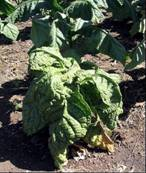
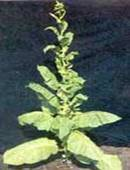
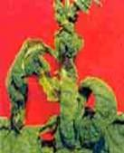

TOBACCO :: MAJOR DISEASE :: LEAF CURL
Leaf curl - Tobacco leaf curl virus(TLCV)
Symptoms
The infections may occur at any stage, when young plants are infected the entire plant remains very much dwarfed. Curling of leaves with clearing and thickening of veins; twisting of petioles; puckering of leaves; rugose and brittle and development of enations are the important symptoms of tobacco leaf curl disease.Three forms of leaf curl expression are observed. First the leaf margins curl downward towards the dorsal side and show thickening of veins with enation on the lower surface. Second crinkle form shows curling of whole leaf edge towards dorsal side with enation on the veins and the lamina arching towards the ventral side between the veinlets. Third the transparent symptom shows the curling of leaves towards the ventral side with clearing of the veins and enations are absent.
|  |  |  |
Symptoms |
||
Pathogen
It is caused by Tobacco leaf curl geminivirus. Virions are geminate, non- enveloped, 18 nm diameter circular ssDNA genome.The virus is a white fly transmitted Geminiviruswith ssDNA as genome.
Disease cycle
The virus has a narrow host range in eight plant families. The virus is not transmissible through sap or seed. The whitefly, Bemisia tabaciis the vector. Due to wide host range of the virus many other plants are acting as source of inoculums.
Management
- Remove and destroy the infected plants.
- Rogue out the reservoir weed hosts which harbour the virus and whiteflies. Planting tobacco crop during the crop periods when the vector population is low.
- Spray Methyldemeton at 0.1 to 0.2 per cent to control the vectors.